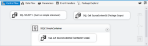
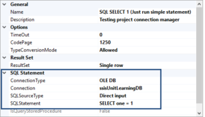

Previously we successfully prepared tests for variables and parameters using VariableCommandand and ParameterCommand. Now it’s time to communicate with the database, and for that, I will use connection manager defined on the project level. I know from the ssisUnit tutorials it works perfect with package connection managers, so it’s time to verify it against the projects. I will test the package 10_ProjectCM.dtsx - it is just getting a single value from the table in a database and storing it in a variable. All the packages and unit tests are on my GitHub.
The package contains three SQL Tasks: the first just checks if we can communicate with the database using SELECT 1 statement, the second gets the information from the table, and the third repeats the second on the container level.
The database
I’m not using database projects in SSDT on a daily basis. This learning project is an excellent reason to use it more, so I’m building the database using the SSDT database project. The details of using them are not part of this series, so if you are not familiar with database projects just use the SQL files to create the required objects. The data is stored in the Scripts subfolder.
The tests
The package 10_ProjectCM.dtsx uses the meta.SourceSystems table to get SourceSystemId value for the package. After retrieval, it stores the value in the variable. So again I’m using VariableCommand in my tests. But this time it’s for values from the SQL commands.
First - just verify if a connection to the database engine works correctly. It’s enough to do just SELECT one = 1 - if it works it means the communication with the database engine works well.
To verify it I’m writing a test:
The expected result is 1 - I’m assigning the result to the variable named Value so - as I mentioned earlier - I will use the VariableCommand. The two remaining tests work similar - SQL Task executes the SELECT statement against the database and assigns the results to the variables. I’m also testing the statement within a container to check if everything works when I’m not at the package level scope. The tests are:
Nothing extraordinary. As you see - verifying if the task returns the expected value for the variable just repeat the step from the previous post.
Summary
Project level connection managers work well at the package and container level. Out of the box. You don’t have to set up the ConnectionRef elements - they are for different purposes (as you will see in the following posts). You deal with the results the same way as with the other variables.


{kind=link}
{kind=link}